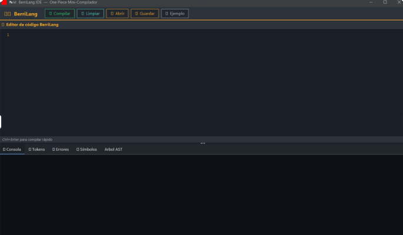
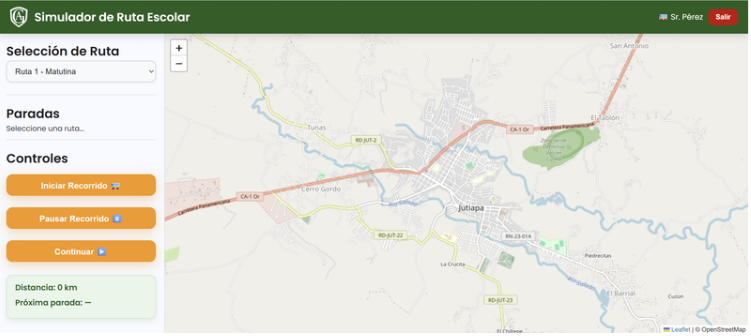
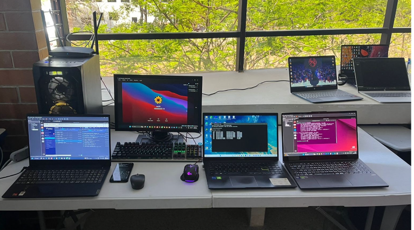

Mini compilador Berrilang
Proyecto académico desarrollado para el curso de Compiladores. Permite escribir código, compilarlo y visualizar tokens, errores, símbolos y el árbol de sintaxis abstracta.
CompiladoresMaestra Infantil Intercultural y estudiante de Ingeniería en Sistemas
Apasionada por la tecnología, el aprendizaje constante y el desarrollo de soluciones digitales.
Conocer mi perfil
Soy estudiante de Ingeniería en Sistemas de Información y Ciencias de la Computación. También cuento con el título de Maestra Infantil Intercultural, formación que me ha permitido desarrollar habilidades de comunicación, organización y responsabilidad.
Tengo experiencia en atención al cliente y ventas, además de conocimientos básicos en programación orientada a objetos, bases de datos y herramientas digitales. Me considero una persona responsable, organizada y dispuesta a aprender nuevas tecnologías.
Mi principal interés es continuar desarrollando mis conocimientos en el área tecnológica y participar en proyectos que me permitan crecer personal y profesionalmente.
Conocimientos técnicos y cualidades que he desarrollado durante mi formación académica y experiencia laboral.
Algunos trabajos que representan mi aprendizaje y crecimiento en el área tecnológica.

Proyecto académico desarrollado para el curso de Compiladores. Permite escribir código, compilarlo y visualizar tokens, errores, símbolos y el árbol de sintaxis abstracta.
Compiladores
Proyecto académico para simular el recorrido de un bus escolar. Incluye selección de rutas, visualización en mapa, controles del recorrido, distancia y próximas paradas.
Simulación
Actividad académica relacionada con la conexión y comunicación entre varios equipos, aplicando configuraciones de red y pruebas prácticas de conectividad.
RedesMi objetivo profesional es continuar fortaleciendo mis conocimientos en Ingeniería en Sistemas y adquirir experiencia en el desarrollo de soluciones tecnológicas útiles, accesibles y adaptadas a las necesidades de las personas.
Deseo crecer como desarrolladora, mejorar mis habilidades en programación, bases de datos, desarrollo web y redes, además de participar en proyectos que me permitan aplicar lo aprendido durante mi formación universitaria.
Aspiro a convertirme en una profesional responsable, organizada y preparada para enfrentar nuevos retos, trabajando en equipo y manteniendo una actitud de aprendizaje constante.